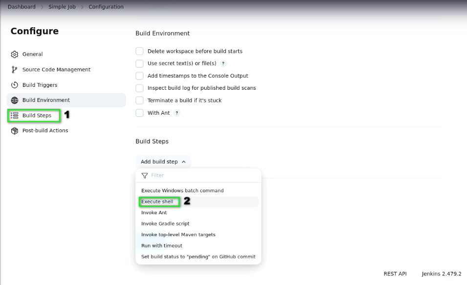

Configuring Jenkins for CI/CD
Here i went After installing Jenkins, the first step is to set up the necessary plugins, such as Git, Docker, and pipeline support. These plugins allow Jenkins to pull code from repositories, build applications, run tests, and deploy to different environments..
Once plugins are installed, you can create a new pipeline job. Pipelines are typically defined in a Jenkinsfile stored in the project repository. This file outlines the stages of your CI/CD process, such as Build → Test → Deploy. Jenkins automatically detects changes in the source code repository (via webhooks) and triggers the pipeline, ensuring rapid feedback for developers.